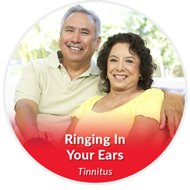

Areas of Expertise › Tinnitus
Ringing, buzzing, hissing, or roaring that will not quiet down. A complete, evidence-based tinnitus program — not a single device, and never “learn to live with it.”
Tailored Solutions for your Tinnitus & Hearing Problems.

For many people, tinnitus becomes a self-reinforcing cycle: the brain treats the sound as important, awareness grows, stress amplifies it, and the sensitivity of the hearing system turns up further. That cycle is exactly what makes tinnitus feel relentless — and it is exactly what modern treatment is designed to interrupt.
Using today’s evidence-based approaches, we can significantly reduce tinnitus awareness and disturbance for the large majority of suitable patients. As a Board Certificate Holder in Tinnitus Management (CH-TM) and a designated Lenire provider, Dr. Cohen builds a plan around your specific tinnitus profile, not a one-size-fits-all device.
Tinnitus is the perception of sound — ringing, whistling, buzzing, or hissing — when no external sound is present. While it typically begins with a hearing loss, it is not purely an auditory problem. It reflects neurological changes within the auditory system and within the parts of the brain that govern attention and emotion.
When the natural balance of the hearing system is disrupted, neurological activity is altered, and the brain interprets that altered activity as sound. Everyday background noise normally covers this activity; when it does not, the sound becomes noticeable and, for some, deeply disturbing.
Not every therapy works for everyone, so we begin with thorough testing and a clear conversation, then combine the approaches most likely to help you. This is a program built around you — often layering several of the options below.
A designated Lenire provider, Dr. Cohen offers this bimodal neuromodulation therapy that pairs gentle sound with mild tongue stimulation to retrain the brain’s response to tinnitus.
An FDA-cleared, neuroscience-based nightly sound therapy. Your tinnitus is precisely matched in pitch and volume, then played through earbuds as you sleep so the brain can recognize the sound and gradually down-regulate it.
A structured therapy combining testing, counseling, and specialized acoustic stimulation to reduce tinnitus awareness and disturbance over time. A longer program with one of the highest rates of lasting success.
Clinically designed, acoustically modified music — including programs for sleep — that soothes the nervous system, eases the stress that fuels tinnitus, and helps the brain settle into natural, restful sleep.
Because most people with tinnitus also have some hearing loss, well-fit hearing aids do double duty — restoring the sounds you are missing while masking the tinnitus. Most patients get partial or complete relief this way.
Tinnitus takes an emotional toll. With in-house therapy support and ongoing coaching, we address the anxiety and sleep disruption alongside the sound, because managing the response matters as much as the device.
“Learn to live with it” is not an acceptable answer.
Schedule a tinnitus consultation with Dr. Cohen at our Sherman Oaks office or by telehealth. We will test carefully, explain what is happening, and build a plan around your goals.
Schedule a Consultation